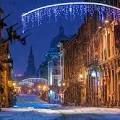
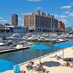
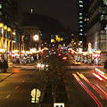
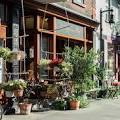
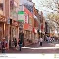

|  | Old Montreal Montréal is the largest city in Canada's Québec province. It’s set on an island in the Saint Lawrence River and named after Mt. Royal, the triple-peaked hill at its heart. Its boroughs, many of which were once independent cities, include neighbourhoods ranging from cobblestoned, French colonial Vieux-Montréal – with the Gothic Revival Notre-Dame Basilica at its centre – to bohemian Plateau. |
|  | Old Montreal The Old Port of Montreal is the historic port of Montreal, Quebec, Canada. Located in Old Montreal, it stretches for over two kilometres along the St-Lawrence River in Old Montreal. |
|  | Downtown Montreal The downtown region houses many corporate headquarters as well a large majority of the city's skyscrapers — which, by law, cannot be greater in height than Mount Royal in order to preserve the aesthetic predominance and intimidation factor of the mountain. The two tallest of these are the 1000 de La Gauchetière and 1250 René-Lévesque, both of which were built in 1992. The Tour de la Bourse is also a significant high-rise and is home to the Montreal |
|  | Mile End, Montral Since the 1980s Mile End has been known for its culture as an artistic neighbourhood, home to artists, musicians, writers, and filmmakers such as Arcade Fire, Adam Gollner, Bran Van 3000, Ariane Moffatt, Grimes, Sean Michaels and Plants and Animals, etc. Many art galleries, designers' workshops, boutiques and cafés are found in the neighbourhood, which have played a large role in Mile End being included on numerous lists . |
|  | Montreal Chinatown Chinatown in Montreal is located in the area of De la Gauchetière Street in Montreal. The neighbourhood contains many Asian restaurants, food markets, and convenience stores as well being home to many of Montreal's East Asian community centres, such as the Montreal Chinese Hospital and the Montreal Chinese Community and Cultural Center. |